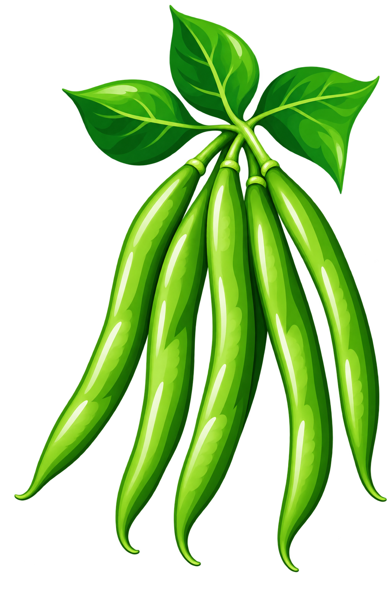
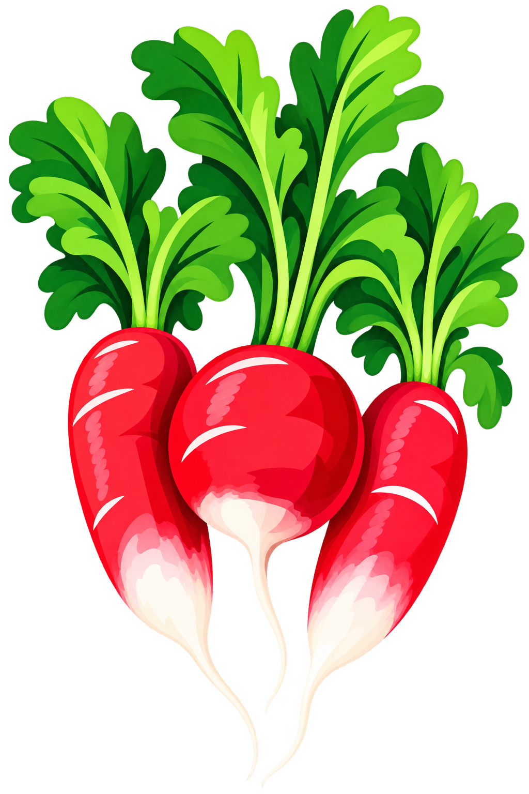
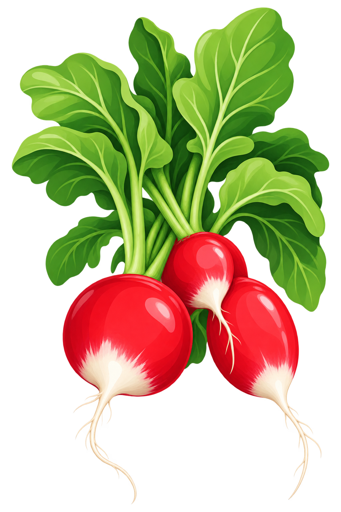

Existing heroes and new stock
Original files shown on the same cream background, at the same image-box height. No artwork has been redrawn.



Original files shown on the same cream background, at the same image-box height. No artwork has been redrawn.


